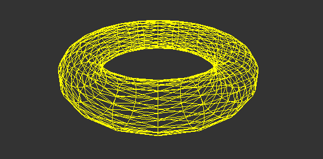
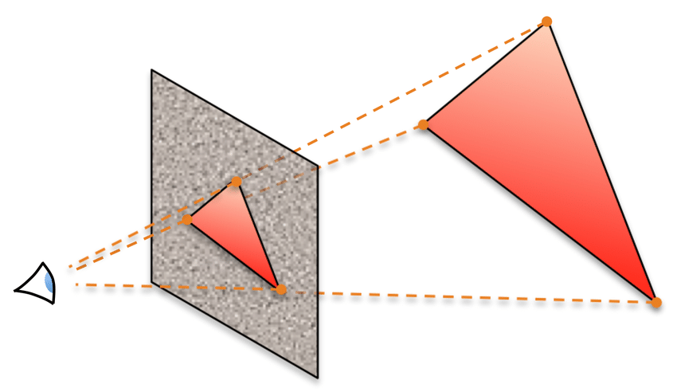

Let there be (gl)Light!
A glimpse in real-time 3D graphics world
3D is a big topic so we'll only see about:
- Real-time rendering (e.g. no offline)
- Polygon-based (e.g. no voxel-based)
- Using OpenGL (e.g. no DirectX)
Polygon-based = objects are made out of triangles
...so all we need is rendering 3D triangles!
Render 3D triangle = project to 2D screen + display
...so all we need is projecting a 3D point into 2D space.
Transform points using projection matrix
- Project to (x, y, z) ∈ ([-1, 1], [-1, 1], [-1, 1]) space
- Perspective projection will be used for demos
- Math background is not part of this presentation 😇

Demo 01: projection
Demo 02: rotation
Problem: 3D => 2D projection works
- ...but calculation is tedious...
- ...especially with move & rotate
- ...and relocate camera
Transformation matrices to the rescue
Solution: changing coordinate system
- Translate point ⇔ p' = p + v
- Rotate point ⇔ multiply by 3x3 matrix
Example for rotation of angle θ around X axis:
=
p'x p'y p'z *
px py pz
1 0 0 0 cos(θ) -sin(θ) 0 sin(θ) cos(θ)
Demo 03: composition
Moving out of wireframe: rasterizing triangles

- Horizontally split triangle at middle vertex's height
- Draw both of them with horizontal lines
- Use linear interpolation between xt, xm1, xm2 & xb
Demo 04: rasterization
Problem: most time (CPU) spent on
- Projecting 3D points to 2D using vector instructions
- Interpolating pixel colors with floating point ops
Fortunately this is heavily parallelizable 🤹♂️
GPU to the rescue!
Meet OpenGL: rendering-oriented & GPU-designed API
- Released in January 1992 by Silicon Graphics
- Managed by Khronos Group since 2006
- Cross-platform & language independant API
- Wildly used, supported and documented
- Superseeded by Vulkan since 2016
Let's use WebGL, an HTML5 API based on OpenGL ES
The WebGL pipeline

Customize highlighted steps with shader programs.
Demo 05: WebGL
Problem: doesn't look realistic at all 😢
- Simulate material properties, not a simple color
- Realistic rendering requires lighting computation
Solution: Phong model (Bui Tuong Phong, 1975)
- Blinn-Phong variant (Jim Blinn, 1977) mostly used (default in OpenGL & DirectX)
- Empirical model with diffuse (rough) + specular (smooth) components
Solution: Physical-based rendering
- Popularized in 2004 from Cornell University research
- More reallistic lighting model than Phong one
- Approximate real world physical properties (conservation of energy, fresnel reflectivity, etc.)
- Used in modern 3D engines (UE4, Unity)
Use tricks to improve final result, e.g.
- Normal mapping: perturb normals using 2D texture
- Height mapping: simulate height on flat surfaces
Demo 06: forward rendering
Problem: complexity = O(nbLights * nbModels) 😥

What if we want hundreds of lights?
Solution: deferred shading (~2007)
- Used in StarCraft II, GTA IV, CryENGINE3...
-
Draw models and store only geometry information:
- Point depth (used to rebuild position)
- Normal at point (thanks Irénée!)
- Material properties (e.g. shininess)
- Process lights for the whole geometry at once
Pro: O(nbLights + nbModels) complexity
Con: limited material capabilities (no transparency, only 1 type of material)
Solution: deferred lighting (aka light pre-pass, ~2008)
- Used in BioShock Inf., Assassin's Creed 3, MGS V...
-
Draw models and store geometry information:
- Point depth (position)
- Normal at point
-
Draw lights and store radiance information:
- Amount of received diffuse/specular light
- Draw models again and apply lights to materials
Pro: better material flexibility than deferred shading
Con: 2 passes per model instead of 1
Demo 08: deferred shading
Demo 09: deferred lighting
Now back to work 😛
Resources: